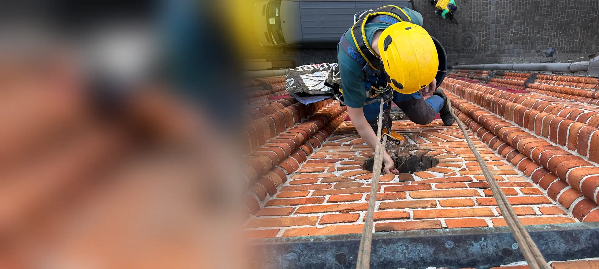
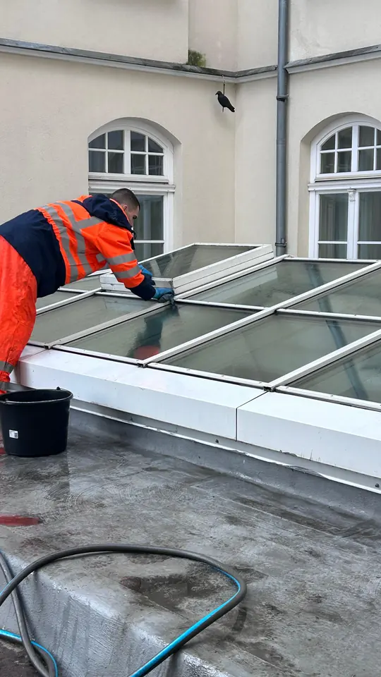
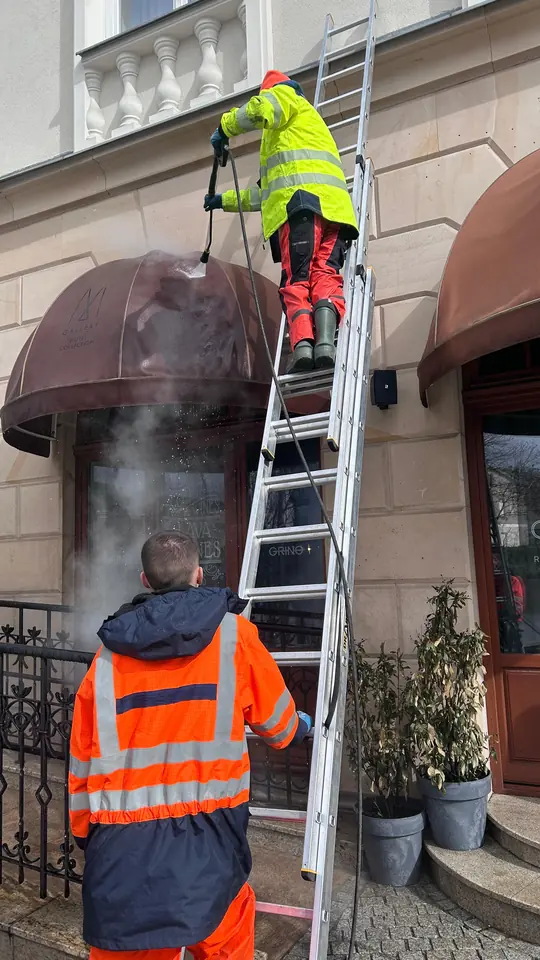

Dachy i kominy
Szybkie usuwanie przecieków i trwałe naprawy pokryć.
- naprawy papy i pokryć dachowych
- uszczelnianie kominów
- obróbki blacharskie
- rynny, rury spustowe i odpływy

Naprawy dachów i kominów, konserwacja elewacji, zalecenia z przeglądów i usuwanie sopli dla wspólnot mieszkaniowych i spółdzielni w Gdyni, Sopocie, Gdańsku i okolicach. Bez rusztowań, z protokołem ze zdjęciami dla zarządcy.
Wspólnota potrzebuje szybkiej, bezpiecznej naprawy i dokumentu dla mieszkańców. Tak rozwiązujemy trzy najczęstsze problemy.
Wszystko, co w budynku mieszkalnym wymaga pracy na wysokości, wykonujemy na linach, bez stawiania rusztowań.
Szybkie usuwanie przecieków i trwałe naprawy pokryć.
Czysta i szczelna elewacja podnosi wartość mieszkań.
Porządek w dokumentach dla zarządcy i mieszkańców.
Bezpieczeństwo mieszkańców i przechodniów przez cały rok.
Pracujemy na każdym typie budynku mieszkalnego w Trójmieście i okolicach.
Wysokie budynki spółdzielni i wspólnot, gdzie podnośnik nie sięga: dachy płaskie, attyki, elewacje z płyt.
dachy płaskie · papa · fugi · okna na klatkach
Strome dachy, kominy i zdobione elewacje w ciasnej zabudowie, często z podwórzem bez dojazdu.
dachówka · kominy · gzymsy · rynny
Budynki deweloperskie po odbiorze: mycie po budowie, poprawki usterek, przeszklenia i balustrady.
mycie po budowie · przeszklenia · usterki
Gdzie działamy: Gdynia, Sopot, Gdańsk, Rumia, Reda, Pruszcz Gdański i pozostałe miejscowości Pomorza.



Zamiast szukać osobnej firmy do dachu, komina, elewacji i sopli, wspólnota ma jednego wykonawcę, który zna budynek. Każda praca kończy się protokołem ze zdjęciami, który zarządca może pokazać na zebraniu.
Nie. Pracujemy techniką dostępu linowego IRATA, więc większość napraw dachów, kominów, rynien i elewacji wykonujemy bez rusztowania. Wspólnota nie płaci za jego postawienie, a klatki schodowe i chodniki zostają otwarte.
Tak. Wykonujemy prace naprawcze wskazane w protokole z przeglądu budynku: uszczelnienia, naprawy pokryć i obróbek, czyszczenie rynien i zabezpieczenia elewacji. Po pracach przekazujemy dokumentację zdjęciową do akt budynku.
Masz jedną osobę kontaktową. Wycenę przygotowujemy na podstawie zdjęć, termin uzgadniamy z zarządcą, a po zakończeniu przekazujemy protokół ze zdjęciami przed i po oraz fakturę VAT wystawioną na wspólnotę.
Tak. Pracujemy na dwóch niezależnych linach, z wydzieloną i oznaczoną strefą pod miejscem pracy. Każde zlecenie jest objęte polisą OC. Mieszkańcy normalnie korzystają z budynku.
Tak. Dla wspólnot i spółdzielni prowadzimy stałą obsługę: przeglądy dachów i rynien, cykliczne mycie okien na klatkach i elewacji oraz szybkie interwencje przy przeciekach. Obiekty stałych klientów mają pierwszeństwo terminów.
Za bezpieczeństwo przechodniów odpowiada właściciel lub zarządca budynku. Zimą usuwamy sople i nawisy śnieżne z dachów i gzymsów na linach, szybko i bez blokowania chodnika na długi czas.
Stała obsługa budynku na wysokości: przeglądy, mycie i szybkie interwencje w jednej umowie. Zarządca ma spokój, a mieszkańcy szczelny dach.